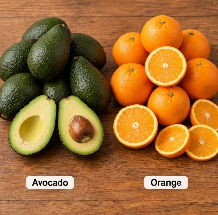

SIRAJE FARM FRESH UGANDA
FARMING MANAGEMANT
crops
tips
products
total
fertilizers
types
problems
LOCATION
P.O Box 991,
Masaka
Kyotera
FARM OUTPUTS ANNUALY
PRODUCT
AMOUNT
Maize
2000kg
BEans
4500kg
Avocado
12 trucks

Oranges
6 trucks
Soya beans and peas
230kg
Coffee
8750kg
Eggs per day250 Trays
CONTACT US ON (0709105843)